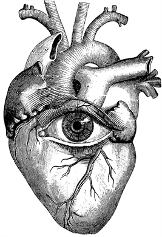

PSYCHOSOMA
"Quand on ne peut le dire avec des mots, on va le crier avec la violence des maux. Mal-à-di(re) et maladie doivent s’entendre dans différents registres pour que nous puissions accéder au gai-rire." Jacques SALOME
Le terme soma vient du grec ancien et signifie le corps. Psyché a également pour origine le grec ancien, signifiant « respiration, souffle, stimulation, vitalité ou force vitale ». Le terme psyché correspond à peu près au mot allemand âme, bien que ce mot véhicule évidemment encore une dimension transcendantale. C’est pourquoi on parle parfois aussi en médecine et en psychologie de maladies de l’âme. Une définition plus large inclut certains troubles dits fonctionnels tels que les conversions, les somatisations, les douleurs et le stress. Le terme de psychosomatique montre que psyché et corps représentent une unité, et sont en interaction et en interdépendance. Les maladies somatiques ont des répercussions psychiques, et vice versa. Des causes psychiques peuvent déclencher des maladies somatiques. Cela fonctionne de la même manière en ce qui concerne les influences sociales, spirituelles et culturelles. Des crises existentielles comme la question du sens de la vie ou le bilan de son passé peuvent également être des déclencheurs de maladies. Que ce soit dans les domaines relevant du corporel, du psychisme, du social, du spirituel et du culturel, nous avons des besoins fondamentaux qui cherchent à être satisfaits. Les sentiments et les réactions corporelles qui sont inséparables font partie de ces besoins.
Le psychiatre Stavros MENTZOS considère les symptômes psychosomatiques comme des productions du Moi qui seraient des tentatives d’adaptation. Elles contribueraient comme les symptômes nerveux à défendre le Moi face aux conflits psychiques et à compenser les manques structurels. Cette organisation psychique se caractérise par un discours factuel, rationnel avec un déficit du fantasme et une difficulté à mobiliser et exprimer ses affects, à élaborer les conflits ou à les refouler. Le sujet est focalisé sur les symptômes de son corps et ne peut s’en éloigner qu’avec difficulté pour parler de sa vie. L’évocation de ses émotions reste très modeste. La relation apparaît impersonnelle, neutre.
Lorsque les défenses sont débordées, la pensée opératoire augmente le risque d’un retentissement désorganisant le corps. La conception de pensée opératoire a été reprise d’une manière voisine sous le terme d’alexithymie qui se définit par l’incapacité à lire ses émotions.
Le psychiatre Stavros MENTZOS considère les symptômes psychosomatiques comme des productions du Moi qui seraient des tentatives d’adaptation. Elles contribueraient comme les symptômes nerveux à défendre le Moi face aux conflits psychiques et à compenser les manques structurels. Cette organisation psychique se caractérise par un discours factuel, rationnel avec un déficit du fantasme et une difficulté à mobiliser et exprimer ses affects, à élaborer les conflits ou à les refouler. Le sujet est focalisé sur les symptômes de son corps et ne peut s’en éloigner qu’avec difficulté pour parler de sa vie. L’évocation de ses émotions reste très modeste. La relation apparaît impersonnelle, neutre.
Lorsque les défenses sont débordées, la pensée opératoire augmente le risque d’un retentissement désorganisant le corps. La conception de pensée opératoire a été reprise d’une manière voisine sous le terme d’alexithymie qui se définit par l’incapacité à lire ses émotions.

L’individu éprouve de la gêne à ressentir ou à parler de ses états affectifs. Sa vie imaginaire est alors limitée. Cependant, il faut différencier la somatisation et l’hypocondrie qui ne se rapporte que de manière indirecte aux troubles psychosomatiques. Elle représente, là encore, une situation où s’associent des manifestations physiques et psychiques. L’hypocondrie se définit par la préoccupation centrée sur la crainte ou l’idée d’être atteint d’une maladie grave fondée sur l’interprétation erronée par le sujet de symptômes physiques. Cette préoccupation persiste malgré un bilan médical approprié et rassurant, montrant d'avantage une structure obsessionnelle.
L'hypnose se place ici, comme médiateur langagier de l'inconscient qui peut accompagner la réduction des affections dans leur dimension psychosomatique : les douleurs chroniques, les migraines, les ulcères d’estomac, le syndrome de l'intestin irritable, le psoriasis, l'eczéma, les verrues mais également certaines formes d'hypertension et de nombreux autres symptômes « modernes », comme les acouphènes, la surcharge pondérale, etc.
L'hypnose se place ici, comme médiateur langagier de l'inconscient qui peut accompagner la réduction des affections dans leur dimension psychosomatique : les douleurs chroniques, les migraines, les ulcères d’estomac, le syndrome de l'intestin irritable, le psoriasis, l'eczéma, les verrues mais également certaines formes d'hypertension et de nombreux autres symptômes « modernes », comme les acouphènes, la surcharge pondérale, etc.
EN RELATION


TRAUMA
EMOTION
DEFENSE
(ne pas voir)
SYMPTÔME
STRESS
CORPS